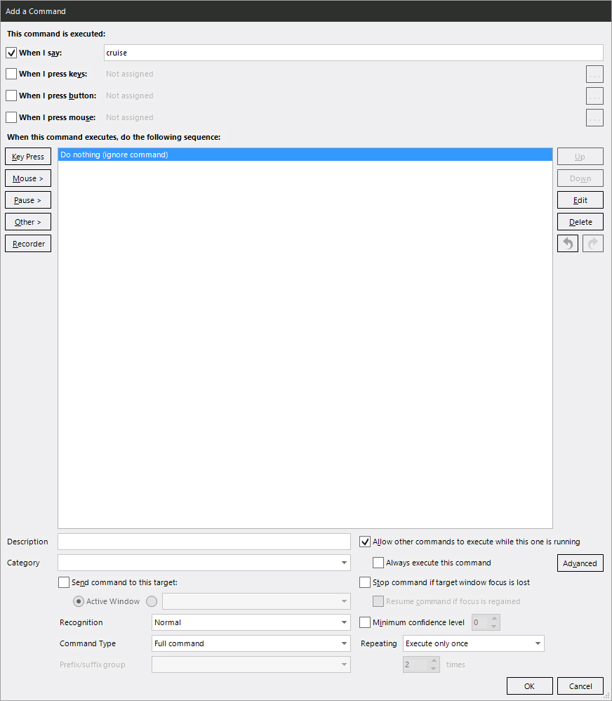
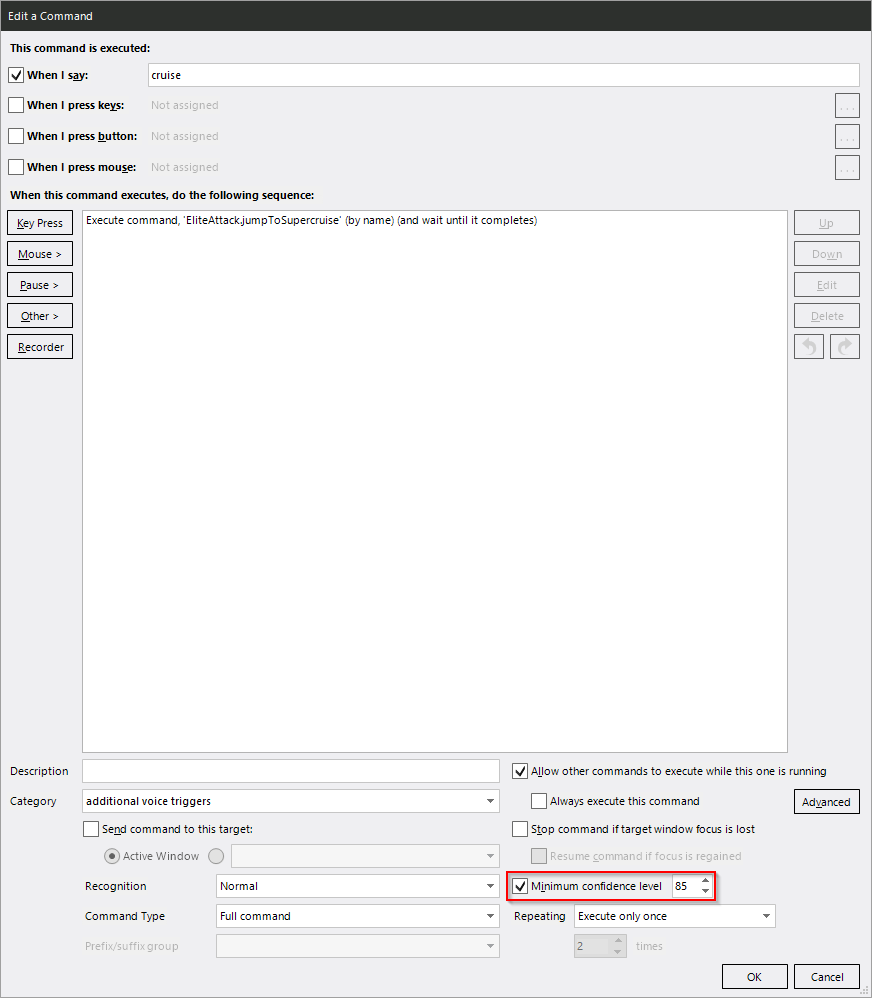
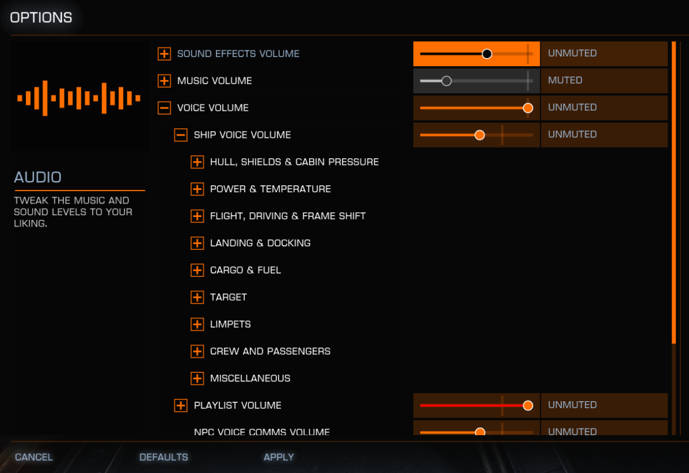

Troubleshooting¶
This will fill up gradually with Troubleshooting tips as people run into common ones.
VoiceAttack does not understand me / mishears me / fires random commands¶
There is a thread on the VoiceAttack forums on how to set up your microphone and the speech recognition engine to work best.
If your microphone is bad and you still get erroneous recognitions when you are not speaking it is probably going to recognize the same command every time. You can remedy that by blocking the voice trigger. One-syllable triggers are especially prone to misrecognition.
- Create a new command in your custom profile.
- Set the “when I say” field to the trigger that gets misrecognized.
Adding the “Other” → “VoiceAttack Action” → “Ignore an Unrecognized Word or Phrase” action will also hide it from the VoiceAttack log when it is (wrongly) recognized. You might or might not want that.
Example for the “cruise” voice trigger of the Supercruise command:

Alternatively you can raise the minimum confidence level and call the underlying command to make misfires less likely:

There are a few examples in the Custom Profile Example.
VoiceAttack recognizes a command, but doesn’t do anything in game¶
Make sure you have a keyboard bind for whatever the command is supposed to do as outlined in Installing#Set Elite Keyboard Binds.
VoiceAttack talks over the COVAS voice¶
There is no way to know for sure when the ingame COVAS is talking to you, so there is no way to always prevent the two from speaking over each other.
You can however either disable TTS responses for events that you know will clash (or file a feature request if one is not optional yet). Alternatively, if you prefer the info given by VoiceAttack over the ingame COVAS, you can deactivate its response to these events in the ingame Audo settings:

While you’re in there you might as well get rid of the spoken FSD countdown that is off by one second …
This doesn’t work (well) with my HCS pack¶
My profiles are designed from the ground up to work with whatever else you are
doing with VoiceAttack; that is the reason for importing them into your own
custom profile instead of selecting e.g. EliteAttack as your active profile.
HCS on the contrary explicitly expects you do exclusively use HCS with VoiceAttack. There is the rudimentary way of including simple profiles into theirs, but the mechanism falls flat in many places. For example you cannot tell HCS to run an included profile’s startup command.
So, in order to mostly make stuff work, you need to treat the HCS profile as your “custom” profile as per this documentation.
- Include
alterNERDtive-baseand all profiles you want to use into the active HCS profile. - Include a custom profile that has a startup command with a voice trigger of your choosing, e.g. “load included profiles”.
- Set up said startup command as you would normally.
- Every time you start VA or change profiles, you will have to manually say “load included profiles”.
That will make most things work. Conflicts may arise if HCS happens to have voice triggers that are the same as mine, in which case their command will take priority.
Note on TTS: EDDI’s TTS (used by my profiles) and HCS’ TTS / recorded voice lines act 100% independently. That means they will frequently “speak over each other”. There is no way to alleviate this.
EDDI does have a mechanism to detect if it is currently speaking – it sets a corresponding VoiceAttack variable. HCS neither does anything similar nor checks if EDDI is speaking to prevent conflicts. Refer to them if you want that changed.
This does not work with Geforce Now¶
Nope. Just won’t. Geforce Now obviously has Elite’s files, journals and keybinds stored on some random PC in the cloud. Your local VoiceAttack has no way of accessing those.
If you can get VoiceAttack to run on Geforce Now in parallel to Elite, I don’t see why it wouldn’t work.